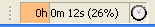

The Lopb Status Indicator is still an experimental feature. It shows an aggregate metric of how much of a developer's session is consumed by background jobs as a percentage. It is intended to be used as a benchmark indicator for system deltas, or rather to compare system performance before and after a change like a RAM upgrade or system reconfiguration.

The Lopb Status Indicator is eventually going to be the "lack of progress bar", so the more time developers wait for jobs to complete (by staring at a progress bar), the higher the "lack of progress" metric will rise, and vice versa.
This indicator is disabled by default, but it may be enabled by clicking the Lopb status checkbox on the Lopb Preference page.